G — realistic mature whitetail shed
Coronet / burr · brow · G2–G4 · forward-then-up beam

ShedHunting.org
Powered by Waypoint
Realistic single whitetail shed silhouettes — anatomy first, not icon geometry. Cream on approved forest ground. Exploration only; not wired to production.
Coronet / burr · brow · G2–G4 · forward-then-up beam

Same typical plan; slenderer beam and tines

Heavy coronet and beam mass; thicker tines; short G5 character

Do not use D/E/F. Production mark unchanged. No deploy.